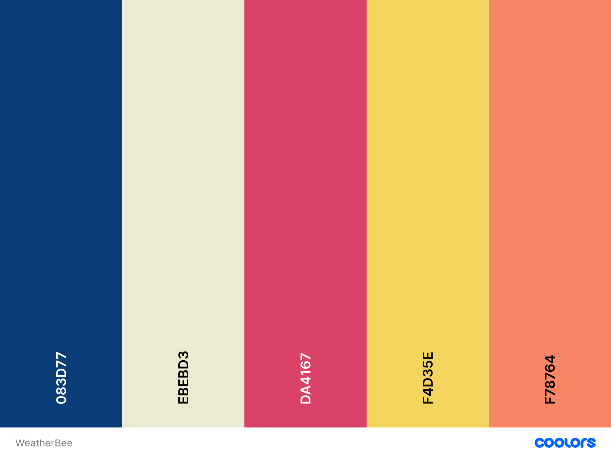

Colors
Use
Colors will be very important on WeatherBee. The main page of the website will change colors depending on the temperature outside. Warm colors for warmer weather and cooler colors for colder weather. Brighter colors will be used to highlight fun facts and important information.